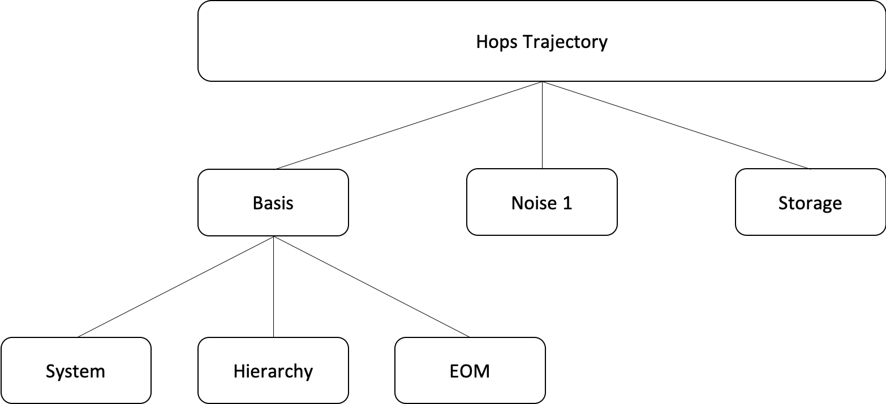

Quick Start Guide¶
Welcome¶
Welcome to MesoHOPS! Here we will discuss the basics of how to initialize and run a mesohops object. The code is divided into six main classes and the structure of the code can be seen below. 
Hops Trajectory¶
HopsTrajectory is the class that a user should interface with to run a single trajectory calculation. To initialize a HopsTrajectory object the following parameters are needed
System Parameters
Hierarchy Parameters
EOM Parameters
Noise Parameters
Intergration Paramters
These parameters are required to be in the form of a dictionary and come from the subclasses listed below.
Once an instance of the HopsTrajectory class is created there are three methods which the user will want to call.
make_adaptive(delta_h,delta_s)
initialize(psi_0)
propogate(t_advance, tau)
Method (1) transforms a not-yet-initialized HOPS trajectory from a standard hops to an adaptive HOPS approach. The inputs delta_h, and delta_s defines the bound on the error derivate error allowed for the hierarchy and state basis. Method (2) initializes the trajectory module by ensuring that
each sub-component is prepared to begin propagating a trajectory. The input psi_0 is the wave function at the initial time. Method (3) perform integration along fixed time-points. The inputs t_advanced and tau correspond to the length of the time axis for the calculation and the time step respectively.
Hops Basis¶
HopsBasis is a class that forms the basis set for a HopsTrajectory and contains three other classes within that mediate the way HopsTrajectory interacts with them. The three classes are HopsSystem, HopsEOM, and HopsHierarchy. Every HOPS calculation is defined by these three classes.
Hops System¶
HopsSystem is a class that stores the basic information about the system and system-bath coupling. The parameters needed for HopsSystem are
Hamiltonian - A Hamiltonian that defines the system
GW_sysbath - a list of parameters (g,w) that define the exponential decomposition
L_HIER - a list of system-bath coupling operators in the same order as GW_SYSBATH
L_NOISE – a list of system-bath noise
ALPHA_NOISE1 - A function that calculates the correlation function given
PARAM_NOISE1 - A list of parameters defining the decomposition of Noise1
Hops Hierarchy¶
HopsHierarchy defines the representation of the hierarchy in the HOPS calculation. The parameters needed for HopsHierarchy are
MAXHIER - The maximum depth in the hierarchy that will be kept
in the calculation (int)TERMINATOR - The name of the terminator condition to be used (or False)
STATIC_FILTER - Name of filter to be used (Traingular, Longedge,Markovian)
Hops EOM¶
HopsEOM is the class that defines the equation of motion for time evolving the hops trajectory. Its primary responsibility is to define the derivative of the system state. The parameters for HopsEom are
TIME_DEPENDENCE – Defining time dependence
EQUATION_OF_MOTION – Name of EOM
ADAPTIVE_H – Boolean that defines if the hierarchy should be adaptive
ADPATIVE_S - Boolean that defines if the system should be adaptive
DELTA_H - The delta value for the hierarchy
DELTA_S - The delta value for the system
Hops Noise¶
HopsNoise is the class that controls a noise trajectory used in a calculation. The parameters for HopsNoise are
SEED - an integer valued seed (or None).
MODEL - The name of the noise model to be used. Allowed
names include: ‘FFT_FILTER’, ‘ZERO’TLEN - The length of the time axis. Units: fs
TAU - The smallest timestep used for direct noise calculations. Units: fs
Hops Storage¶
HopsStorage is a class that is responsible for storing data for a single instance of a HopsTrajectory object. HopsStorage has no inputs.
Starting a Trajectory¶
To run a trajcetory the following steps should be taken
Initialize an instance of HopsTrajectory using the parameters outlined for HopsTrajectory
Decide on a HOPS trajectory or and adHOPS trajectory using make_adaptive
Initialize the trajectory using initialize()
Decide on the time axis and time step for the trajectory using propagate()
Example Trajectory¶
#import statements
import os
import numpy as np
import scipy as sp
from scipy import sparse
from pyhops.dynamics.hops_trajectory import HopsTrajectory as HOPS
from pyhops.dynamics.eom_hops_ksuper import _permute_aux_by_matrix
from pyhops.dynamics.bath_corr_functions import bcf_exp, bcf_convert_sdl_to_exp
# noise parameters
noise_param = {
"SEED": 0,
"MODEL": "FFT_FILTER",
"TLEN": 25000.0, # Units: fs
"TAU": 1.0, # Units: fs
}
nsite = 4
e_lambda = 20.0
gamma = 50.0
temp = 140.0
(g_0, w_0) = bcf_convert_sdl_to_exp(e_lambda, gamma, 0.0, temp)
loperator = np.zeros([4, 4, 4], dtype=np.float64)
gw_sysbath = []
lop_list = []
for i in range(nsite):
loperator[i, i, i] = 1.0
gw_sysbath.append([g_0, w_0])
lop_list.append(sp.sparse.coo_matrix(loperator[i]))
gw_sysbath.append([-1j * np.imag(g_0), 500.0])
lop_list.append(loperator[i])
# Hamiltonian
hs = np.zeros([nsite, nsite])
hs[0, 1] = 40
hs[1, 0] = 40
hs[1, 2] = 10
hs[2, 1] = 10
hs[2, 3] = 40
hs[3, 2] = 40
# System parameters
sys_param = {
"HAMILTONIAN": np.array(hs, dtype=np.complex128),
"GW_SYSBATH": gw_sysbath,
"L_HIER": lop_list,
"L_NOISE1": lop_list,
"ALPHA_NOISE1": bcf_exp,
"PARAM_NOISE1": gw_sysbath,
}
# EOM parameters
eom_param = {"EQUATION_OF_MOTION": "NORMALIZED NONLINEAR"}
# Integration parameters
integrator_param = {"INTEGRATOR": "RUNGE_KUTTA"}
# initial wave function
psi_0 = np.array([0.0] * nsite, dtype=np.complex)
psi_0[2] = 1.0
psi_0 = psi_0 / np.linalg.norm(psi_0)
t_max = 200.0
t_step = 4.0
delta = 1e-4
hops = HOPS(
sys_param,
noise_param=noise_param,
hierarchy_param={"MAXHIER": 2},
eom_param=eom_param,
)
hops.make_adative(delta/np.sqrt(2), delta/np.sqrt(2))
hops.initialize(psi_0)
hops.propogate(t_max, t_step)